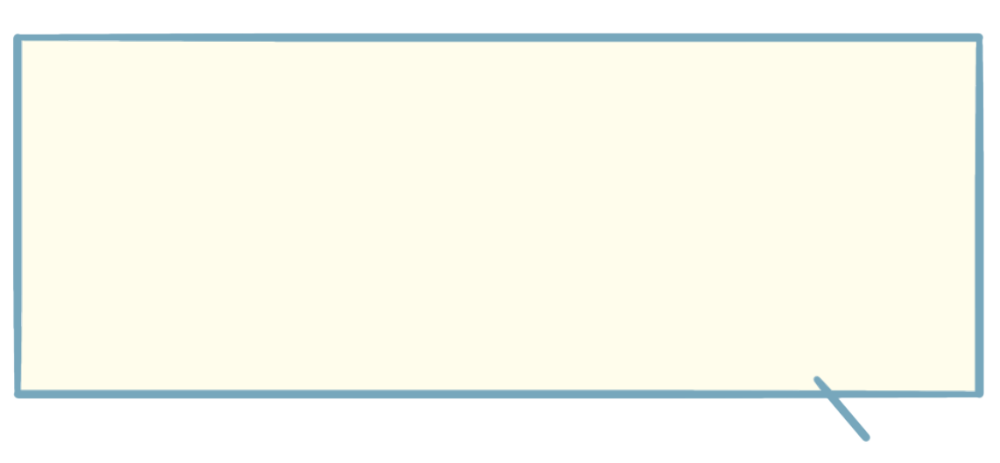

S.M さん (30代・女性)
「ヨガを始めてから、体だけでなく心もリフレッシュできるようになりました。最初はポーズがうまくできなくて不安でしたが、インストラクターの方が一つ一つ丁寧に教えてくれたおかげで、少しずつできるようになり、体が軽くなったと感じています。日々のストレスもヨガを終えるとスッキリします。」
K.S さん (40代・女性)
「運動不足を解消したくてヨガを始めました。肩こりや腰痛がひどく、最初は不安もありましたが、呼吸とストレッチを組み合わせたレッスンがとても心地よくて、体の調子がどんどん良くなってきました。レッスンの後は心身ともにリラックスして、気分も前向きになれます。」
M.A さん (20代・女性)
「仕事のストレスが溜まりがちで、リラックスできる時間を持ちたいと思い、ヨガを始めました。体の柔軟性が少しずつ向上し、日常生活でも体を動かすことが楽しくなりました。レッスンは自分のペースで進められるので、無理なく続けられています。気持ちが落ち着き、心地よく過ごせる時間が増えました。」
I.M さん (50代・女性)
「長年運動をしてこなかったので、最初は体が硬くて苦戦しましたが、ヨガを続けることで、体の柔軟性が増し、普段の生活が楽になりました。何よりも、ヨガをすることで心が落ち着き、気持ちが穏やかになります。年齢に関係なく、自分のペースで無理なくできるので、これからも続けていきたいです。」